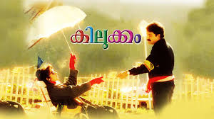
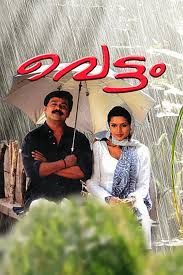
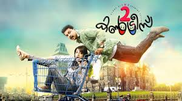

Four friends deemed "losers" face immense pressure from parents and society upon entering adulthood. Their emotional tale sees them embark on a journey of self-discovery and acceptance, where love ultimately triumphs over judgment.

2.Kilukkam
1991 | 2h 36m | 18
10/10
Nandini is an illegitimate child who comes to Ooty in search of her father. She meets Joji, a tourist guide, and pretends to be mentally unstable in order to get shelter in his house.

3. Vettam
2004 | 2h 43m | 15
9/10
While trying to escape after stealing a necklace, Gopi runs into Veena. They eventually fall in love and find themselves in a world of trouble.

4. Two Countries
2015 | 2h 41m | 18
8/10
An immoral man decides to marry a woman with physical disabilities to avoid repayment of a loan. Later, he changes his stance when he gets a chance to marry a wealthy alcoholic.